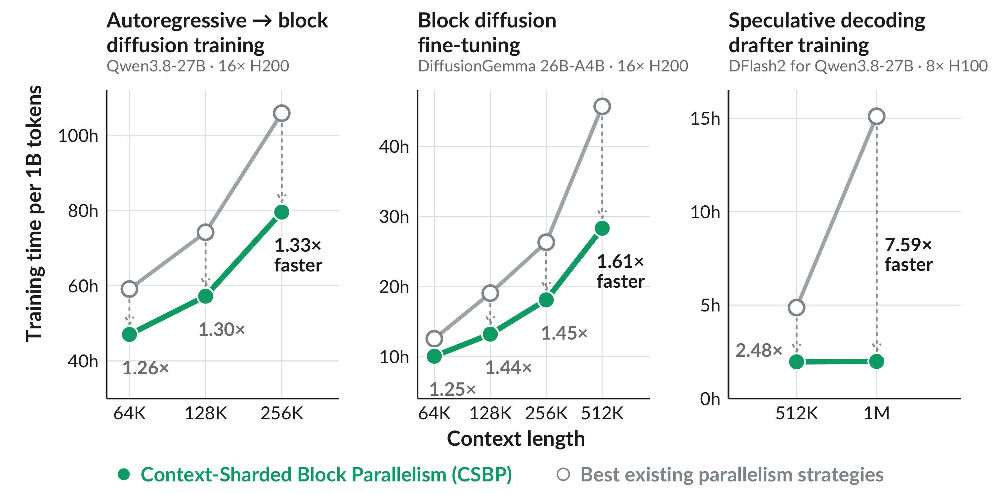
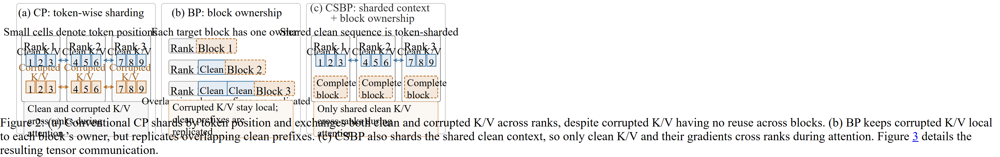
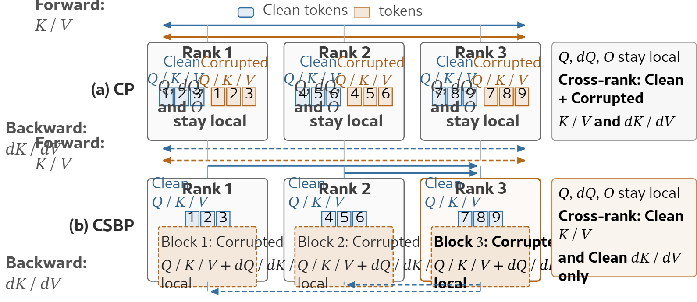
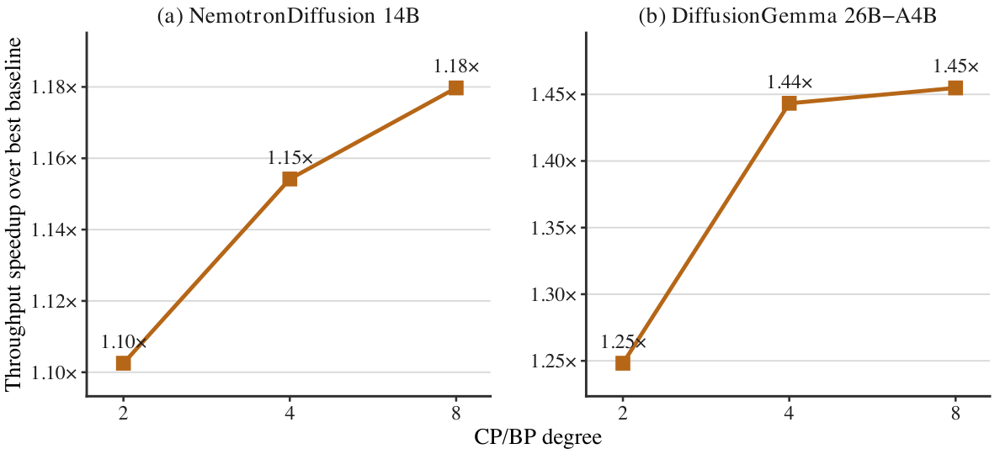
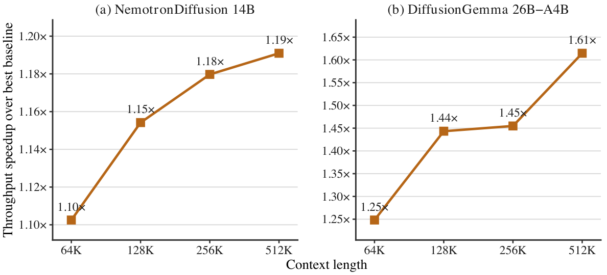
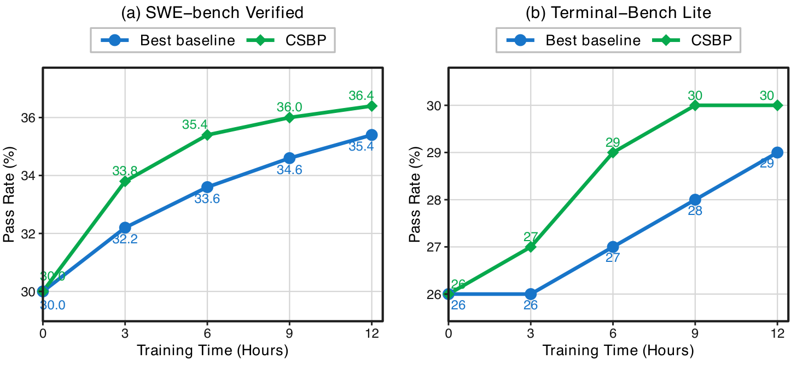

块扩散语言模型（BDLM）块间自回归、块内并行去噪，长上下文训练的瓶颈落在激活显存与分布式注意力的通信上。传统上下文并行按token位置切分整条「干净 + 加噪」表示，而加噪K/V只在块内被用到，根本不会被别的块复用，这部分跨卡传输纯属浪费。
这篇来自斯坦福的工作提出块并行（BP）与上下文分片块并行（CSBP）：把完整的加噪块计算绑到一个rank，再把共享的干净上下文切分到同一批rank。16张H200、256K上下文下，微调吞吐提升1.18到1.45倍，自回归转BDLM提升1.27到1.33倍，峰值显存持平或更低；512K全模型加速1.61倍，草稿模型训练在1M上加速7.59倍。
块扩散语言模型（BDLM）把两件事合到了一起：块与块之间保留自回归依赖，块内部则用并行去噪一次性生成多个token。它既有自回归模型的因果结构，又有扩散生成的并行度。而编码agent这类长跑助手会不断累积交互历史，长上下文训练因此变成刚需，瓶颈也随之集中到两处：激活显存与长上下文注意力。
现有长上下文训练系统普遍依赖上下文并行（CP）：按token位置把序列激活切到多张卡上，每张卡只存一部分上下文，算注意力时再跨卡交换信息。麻烦在于，BDLM训练送进注意力的是一条「干净 + 加噪」拼接起来、长度翻倍的表示，CP会把它整条按位置切开。
但这两部分的复用性质完全不同。前面块的干净K/V会被后面多个块的损失复用；而块b的加噪K/V，只被它自己的query用到，别的块根本不碰。CP不看这个区别：每一层前向都要交换干净与加噪两类K/V，反向还要把各自的梯度传回位置分片的所有者。那些没有任何跨块复用的加噪K/V，就这样白占了跨卡带宽。

作者的第一个观察是：BDLM的目标函数按加噪块天然可分离。由此提出块并行（BP），把「目标块计算」本身变成一个新的并行维度：每个完整的加噪块计算（前向、损失、反向）整体交给一个rank，不同rank并行跑不同的块，块的加噪Q/K/V、激活与梯度全部留在本地。
第二个观察是BP单独用会越来越糟：它要在各rank上复制互相重叠的干净前缀，越靠后的块需要的前缀越长，最坏情况下干净计算与激活会在多达min(B, P) 个rank上被重复算、重复存。于是有了上下文分片块并行（CSBP）：把完整加噪块绑定到某个rank的同时，让CP把共享的干净序列切分给同一批rank。每个干净K/V分片服务于所有前缀包含它的本地块，它的梯度累加到分片所有者身上。这样干净的计算与存储被摊开，加噪K/V及其梯度仍然留在本地。
论文的贡献分四块。一是块并行，把目标块计算做成BDLM训练的新并行维度，利用按块可分的损失，把每个完整加噪块的前向、损失与反向都交给一个rank，块专属的跨卡通信就此消失。二是上下文分片块并行，在不复制干净序列的前提下把BP扩展到长上下文：同一批rank上，BP负责完整加噪块，CP负责共享干净序列，加噪K/V彻底退出跨卡注意力通信，重叠的干净前缀也不再被复制。三是效率，六个模型上，256K上下文的微调吞吐提升1.18到1.45倍、自回归转BDLM提升1.27到1.33倍，峰值显存持平或更低，而且优势随CP/BP度数与上下文长度继续拉大，512K时NemotronDiffusion 14B达到1.19倍、DiffusionGemma 26B-A4B达到1.61倍。四是把收益落到训练与下游任务上，DFlash2草稿模型训练的加速在512K是2.48倍、1M是7.59倍；在同样12小时的DiffusionGemma SFT预算下，CSBP的每个检查点在SWE-bench Verified与Terminal-Bench Lite上通过率都更高。
先把记号说清楚：序列x被切成B个连续块，每块M = L / B个token，b索引块，r索引并行组里的P个rank。BDLM的生成方式是按块从左到右、块内并行去噪，整体概率写成按块连乘的条件分布。训练时每个目标块都有一份加噪副本，条件在它自己的干净前缀上。标准实现把长度L的加噪副本与长度L的干净副本并排放在一起，形成一条长度2L的表示。
关键结构在这里：加噪token在自己块内双向可见，并且能看到该块之前的干净前缀，但用不到其他块的加噪K/V。所以它们的可见K/V就是「本块加噪K/V加前面所有干净K/V」。于是块b的加噪激活只影响它自己那份损失，而干净表示会被后面多个块的损失复用：加噪计算是块专属的，干净计算是共享的。

BP就是把这个结构直接映射成并行维度：每个完整加噪块计算交给一个rank，该rank负责这个块的前向、损失与反向，块的加噪Q/K/V、激活和梯度都不出卡。rank r只求它负责的那些块的损失之和，而求导是线性的，所以所有rank的梯度加起来正好等于完整的BDLM梯度，数学上没有任何近似。
代价在于干净前缀。一个rank可以只算它负责的块所需要的最长那段前缀，但这些前缀在rank之间高度重叠，负责靠后块的rank几乎要算完整条干净序列，干净计算与激活最多被复制min(B, P) 份。BP省下了加噪K/V的通信，却在干净这一侧付出了复制成本。
第二个观察是：BP与CP作用在这份计算的两个互不重叠的部分上，而且可以压在同一批P个rank上。BP负责完整的加噪块计算，CP负责被这些块共享的干净序列计算。合起来就是CSBP：每个rank既跑一部分完整的加噪块，又只存一段干净序列分片。BP提供本地的加噪块，CP提供分布式的干净K/V，并且把干净侧的梯度贡献累加到分片所有者上。

前向阶段，负责块b的rank计算的注意力输出，是把本块的加噪K/V与CP提供的干净前缀K/V分片拼在一起做注意力。块内那部分是本地数据，干净前缀部分来自分布式分片，两边用在线softmax合并，结果与整条序列一次性算完全等价。一次上下文并行注意力里，rank r会把每个干净K/V分片同时用于自己的干净query，以及所有前缀包含该分片的本地加噪块，所以长度L的干净K/V流是被反复复用的。
反向阶段，负责块b的rank反传它自己那份损失，本地算出加噪Q/K/V的梯度，同时向干净前缀K/V累积梯度贡献。干净分片的所有者接收来自所有干净query以及它所负责块的query的贡献，继续往干净投影和更早的层反传。分工因此非常干净：加噪Q/K/V的梯度留在块owner上，穿过干净激活的梯度累加到干净分片owner上，两者合起来就是全局参数梯度。
负载均衡靠双端配对：越靠后的目标块要看的干净前缀越长，越靠后的干净分片要算的因果注意力也越多，两边的工作量曲线形状一致。论文把块b与块B+1-b分给同一个rank，干净序列的zigzag分片也用同一套早晚期配对。等分块数时，每个rank拿到的加噪块工作量与干净因果注意力精确相等；块数不能整除的情况也有对应处理。
最后是这笔账。计算上，CP与CSBP要算的有效注意力对完全相同，总计算量都是 Θ(L²)、每rank Θ(L²/P)，CSBP改变的只是工作在哪里执行。通信上，CP要分发长度2L的干净加噪混合表示，CSBP只分发长度L的干净K/V，前向和反向都省掉了整条加噪部分。显存上，每个rank存L/P的干净分片加上它负责块的加噪激活，均衡分配下大约2L/P个token的激活，与传统CP同阶；而纯BP靠后的rank可能要存接近整条L的干净前缀，CSBP把它压回L/P，最坏情况下相当于P倍缩减。
评估覆盖三类负载。监督微调用NemotronDiffusion 3B、8B、14B与DiffusionGemma 26B-A4B；自回归转BDLM用Qwen3.5-27B与Qwen3.8-27B的文本骨干，配Fast-dLLM v2目标，用来检验CSBP在微调之外的适用性；另外给Qwen3.8-27B与Muse-Glimmer-30B训练长上下文DFlash2草稿模型。全模型训练跑在两个节点、每节点8张H200（每卡141GB HBM3e）上，草稿模型训练用单节点8张H100（每卡80GB HBM3）。
基线是高度优化过的、不带BP的传统训练，CP场景使用分布式训练库里的token位置切分，并经过profiling优化，可共用的kernel与布局优化也对CSBP开放；每个设置下基线取测过的最高吞吐可行组合，CSBP则独立优化拓扑与batch size。所有实验用PyTorch、FlashAttention-4、FlexAttention与NCCL，全程BF16，报告模型FLOPs利用率（MFU）与峰值HBM。
在256K上下文上，CSBP在每一个模型、两种训练目标下都提升了吞吐：微调1.18到1.45倍，自回归转BDLM 1.27到1.33倍，峰值显存持平或更低。收益从NemotronDiffusion一直延伸到DiffusionGemma 26B-A4B和两个Qwen骨干，跨模型族表现一致。
| 模型（基线拓扑 → CSBP拓扑） | 吞吐 (Tok/s) | 加速比 | MFU (%) | 峰值HBM (GiB) |
|---|---|---|---|---|
| 微调 · NemotronDiffusion 3B DP4/TP1/CP4 → DP4/TP1/CP4/BP4 | 13,434 →16,027 | 1.19× | 31.7 →37.8 | 57.1 →57.0 |
| 微调 · NemotronDiffusion 8B DP4/TP1/CP4 → DP4/TP1/CP4/BP4 | 9,668 →11,379 | 1.18× | 32.3 →38.0 | 97.5 → 97.5 |
| 微调 · NemotronDiffusion 14B DP2/TP1/CP8 → DP2/TP1/CP8/BP8 | 7,884 →9,301 | 1.18× | 33.1 →39.0 | 91.1 →90.6 |
| 微调 · DiffusionGemma 26B-A4B DP1/TP1/EP2/CP8 → DP1/TP1/EP2/CP8/BP8 | 10,557 →15,359 | 1.45× | 12.7 →18.4 | 118.1 →113.6 |
| 自回归转BDLM · Qwen3.8-27B DP1/TP2/CP8 → DP1/TP2/CP8/BP8 | 2,623 →3,490 | 1.33× | 20.1 →26.8 | 120.7 →111.1 |
| 自回归转BDLM · Qwen3.5-27B DP1/TP2/CP8 → DP1/TP2/CP8/BP8 | 2,641 →3,351 | 1.27× | 20.3 →25.7 | 120.7 →111.1 |
先看并行度数。把CP/BP度数从2提到8，优势继续扩大：NemotronDiffusion 14B的加速从1.10倍升到1.18倍，DiffusionGemma 26B-A4B从1.25倍升到1.45倍。训练要用更多rank去容纳更长上下文时，把加噪块计算留在本地这件事越来越值钱。

再看上下文长度。从64K拉到512K，NemotronDiffusion 14B的加速从1.10倍升到1.19倍，DiffusionGemma 26B-A4B从1.25倍升到1.61倍，收益一直保持到512K，与「序列越长、避免加噪K/V通信越有价值」的判断一致。

上下文分片是这些收益能落地的前提。没有它，纯BP要复制互相重叠的干净前缀：NemotronDiffusion 14B的纯BP在64K就更慢、更费显存，到128K直接爆显存；DiffusionGemma 26B-A4B的纯BP在64K与128K都跑不起来。这些情况下CSBP既能装下、又能加速。
在8张H100上，CSBP对DFlash2草稿模型训练的加速比全模型负载更夸张，原因是传统CP会把块内解码器、词表损失与选择器在上下文rank之间复制一遍，而CSBP把每个草稿块整体交给一个rank。512K时去掉这份两份复制，吞吐提升2.48倍；1M时四个CP2/BP2副本对上一份CP8基线，提升7.59倍。512K的执行GEMM利用率（相对BF16峰值）从28.7% 升到37.0%，1M是35.8% 对36.5%。512K时CSBP把暴露出来的注意力通信从每卡105.4 ms压到7.5 ms，因为每个块都待在一个rank上，不再搬加噪K/V与它们的梯度；256K时全副本能装下，DP8仍然快19.2%，因为它没有序列并行的额外开销。Muse-Glimmer-30B的收益也一致：相对最快的可行非BP拓扑，256K、512K、1M分别快1.56倍、3.35倍与4.81倍，1M时CP4/BP4比CP8省12.0% 峰值显存，还快4.81倍。
最后检验这些吞吐是否真的变成下游进度。作者用最好的基线与CSBP各微调DiffusionGemma 26B-A4B十二小时，每三小时在SWE-bench Verified与Terminal-Bench Lite上评一次检查点。CSBP在每一个检查点、两个基准上都拿到更高的通过率，领先幅度最高到SWE-bench Verified上1.8个百分点、Terminal-Bench Lite上2个百分点，12小时结束时两个基准都还领先1个百分点。

| 模型 / 上下文（基线拓扑 → CSBP拓扑） | 吞吐 (Tok/s) | 加速比 | MFU (%) | 峰值HBM (GiB) |
|---|---|---|---|---|
| Qwen3.8-27B · 256K DP8 → DP4/CP2/BP2 | 167,228 → 140,350 | 0.84× | 38.4 → 32.2 | 63.5 →48.3 |
| Qwen3.8-27B · 512K DP4/CP2 → DP4/CP2/BP2 | 57,027 →141,222 | 2.48× | 13.1 →32.4 | 63.3 →54.6 |
| Qwen3.8-27B · 1M DP1/CP8 → DP4/CP2/BP2 | 18,389 →139,541 | 7.59× | 4.2 →32.0 | 53.7 → 67.1 |
| Muse-Glimmer-30B · 256K DP4/CP2 → DP4/CP2/BP2 | 62,698 →98,046 | 1.56× | 18.5 →28.9 | 63.8 →57.5 |
| Muse-Glimmer-30B · 512K DP2/CP4 → DP4/CP2/BP2 | 29,493 →98,785 | 3.35× | 8.7 →29.1 | 63.8 → 65.6 |
| Muse-Glimmer-30B · 1M DP1/CP8 → DP2/CP4/BP4 | 12,842 →61,742 | 4.81× | 3.8 →18.2 | 63.3 →55.7 |
CSBP有一个明确前提：训练目标必须已知。它加速的是训练，而不是生成未知的未来token，因此它瞄准的是注意力通信与干净前缀复制最昂贵的长上下文区间。
结论上，BP把完整的加噪块计算绑到一个rank，CSBP再把共享的干净上下文切分到同一批rank上，于是加噪K/V与其梯度留在本地、干净前缀不再被复制、参考计算与梯度完全保持。它证明按块切分的并行方式能提升长上下文BDLM的训练效率，并在固定预算下改善后训练结果，而且与数据并行、张量并行、专家并行是互补关系。
参考：https://arxiv.org/html/2609.19242v1